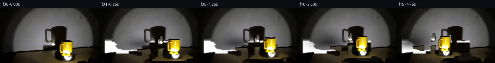

![首帧]()

Round 00
2026-11-05T18:12:46.760998+00:00像素候选变化代码 +612/−0inspection 更新
pixels 4cedda60a195fd4f · code b87cd95f3f8077ee
查看本轮 generate.py 真实 diff
--- previous/generate.py +++ current/generate.py @@ -0,0 +1,612 @@ +#!/usr/bin/env python3 +"""generate.py — PixelWorld-Text: Yellow mug on clockwise-rotating platform with spotlight shadow. + +Scene: A yellow mug sits on a black clockwise-rotating platform. +A spotlight from the right illuminates the mug, casting a large shadow on the wall behind it. +The platform rotates clockwise (viewed from above), carrying the mug in a circular path. + +Method: Layer decomposition with local pixel inpainting for the background, +mug sprite extraction via difference-from-background, and per-frame compositing +with a dynamic shadow model. +""" + +import numpy as np +from PIL import Image, ImageFilter +from scipy import ndimage +from pathlib import Path + +WORKSPACE = Path(__file__).resolve().parent +FRAMES_DIR = WORKSPACE / "frames" +FRAMES_DIR.mkdir(exist_ok=True) + +H, W = 144, 256 +N_FRAMES = 20 + +# ── Load first frame ────────────────────────────────────────────── +src = np.array(Image.open(WORKSPACE / "first_frame.png")).astype(np.float64) + +# ── Scene parameters (from numerical analysis) ──────────────────── +PLATFORM_CX = 128.0 # platform center x (projected) +PLATFORM_CY = 108.0 # platform center y (projected) +MUG_OFFSET_X = 44.0 # mug's initial x-offset from platform center +MUG_OFFSET_Y = 2.0 # mug's initial y-offset from platform center +ORBIT_RADIUS = MUG_OFFSET_X # horizontal orbit radius in image pixels +DEPTH_SCALE = 0.25 # foreshortening: image-y shift per unit of depth +WALL_BOTTOM_Y = 90 # approximate y where wall transitions to platform + +# Total rotation over 5 seconds: ~120° clockwise +TOTAL_ANGLE = np.radians(120.0) +ANGLE_PER_FRAME = TOTAL_ANGLE / (N_FRAMES - 1) + + +# ═══════════════════════════════════════════════════════════════════ +# STEP 1: Create clean background (no mug, no shadow) +# ═══════════════════════════════════════════════════════════════════ + +def create_mug_mask(arr): + """Create a mask covering the mug region using color heuristics.""" + r, g, b = arr[:,:,0], arr[:,:,1], arr[:,:,2] + bright = r + g + b + + # Mug body: golden/yellow warm tones + is_body = (r > 100) & (g > 70) & (r - b > 25) & (g - b > 10) + + # Mug top/rim: bright white reflections + is_rim = (r > 180) & (g > 170) & (b > 150) & (bright > 520) + + # Handle: warm tones to the right of the body + is_handle = (r > 70) & (g > 50) & (r > b) & (g > b) & (r - b > 15) + + mask = is_body | is_rim | is_handle + + # Morphological cleanup + mask = ndimage.binary_dilation(mask, structure=np.ones((3,3)), iterations=3) + mask = ndimage.binary_fill_holes(mask) + mask = ndimage.binary_erosion(mask, structure=np.ones((3,3)), iterations=1) + mask = ndimage.binary_dilation(mask, structure=np.ones((3,3)), iterations=1) + + return mask + + +def create_shadow_mask(arr, mug_mask): + """Create a mask for the shadow region on the left wall.""" + r, g, b = arr[:,:,0], arr[:,:,1], arr[:,:,2] + bright = r + g + b + + # Shadow: darker region on the left side of the wall + # Compare left wall brightness to right wall brightness + mask = np.zeros((H, W), dtype=bool) + + for y in range(80, 118): + # Right wall reference brightness (clean area) + right_bright = np.median(bright[y, 160:200]) + for x in range(15, 100): + if mug_mask[y, x]: + continue + if bright[y, x] < right_bright * 0.7 and bright[y, x] > 15: + mask[y, x] = True … diff truncated; 525 more lines …